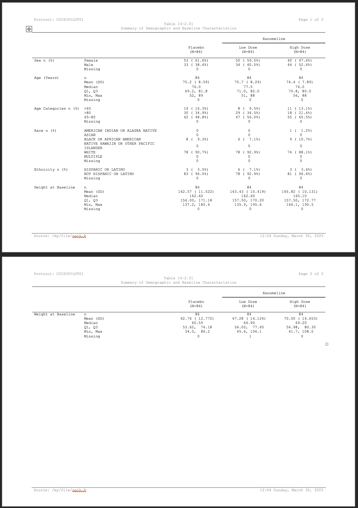

This vignette walks through a program in a fuller context. Here we’re going to create a simple demographics table.
First we’ll start by preparing the data. We’ll use our other package {Tplyr} to take care of the summaries.
library(clinify)
library(Tplyr)
library(dplyr)
#>
#> Attaching package: 'dplyr'
#> The following objects are masked from 'package:stats':
#>
#> filter, lag
#> The following objects are masked from 'package:base':
#>
#> intersect, setdiff, setequal, union
tplyr_adsl <- tplyr_adsl |>
mutate(
SEX = recode(SEX, M = "Male", F = "Female"),
RACE = factor(
RACE,
c(
"AMERICAN INDIAN OR ALASKA NATIVE",
"ASIAN",
"BLACK OR AFRICAN AMERICAN",
"NATIVE HAWAIIN OR OTHER PACIFIC ISLANDER",
"WHITE",
"MULTIPLE"
)
)
)
t <- tplyr_table(tplyr_adsl, TRT01P) |>
add_layer(
group_count(SEX, by = "Sex n (%)") |>
set_missing_count(f_str("xx", n), Missing = NA, denom_ignore = TRUE)
) |>
add_layer(
group_desc(AGE, by = "Age (Years)")
) |>
add_layer(
group_count(AGEGR1, by = "Age Categories n (%)") |>
set_missing_count(f_str("xx", n), Missing = NA, denom_ignore = TRUE)
) |>
add_layer(
group_count(RACE, by = "Race n (%)") |>
set_missing_count(f_str("xx", n), Missing = NA, denom_ignore = TRUE) |>
set_order_count_method("byfactor")
) |>
add_layer(
group_count(ETHNIC, by = "Ethnicity n (%)") |>
set_missing_count(f_str("xx", n), Missing = NA, denom_ignore = TRUE)
) |>
add_layer(
group_desc(HEIGHTBL, by = "Height at Baseline")
) |>
add_layer(
group_desc(WEIGHTBL, by = "Weight at Baseline")
)
# Apply some conditional formatting for blanking out 0's.
dat <- build(t) |>
mutate(
across(
starts_with("var"),
~ if_else(
ord_layer_index %in% c(1, 3:5),
apply_conditional_format(
string = .,
format_group = 2,
condition = x == 0,
replacement = ""
),
.
)
)
)
# Sort all the row values out, add row masks and breaks
dat <- dat |>
arrange(ord_layer_index, ord_layer_1, ord_layer_2) |>
apply_row_masks() |>
select(
starts_with("row_label"),
var1_Placebo,
`var1_Xanomeline Low Dose`,
`var1_Xanomeline High Dose`,
ord_layer_index
)
# Grab the header Ns for column header help
header_n <- t$header_n$n
names(header_n) <- t$header_n$TRT01PGreat - our data are presentation ready now. Using {clinify} we’ll get everything ready. Looking at some of these sections:
- We use
clin_auto_page()to let Word figure out page breaks for us. - Column headers are set using
clin_column_headers(). We grabbed our header N’s from {Tplyr} and inserted them here. - We want our headers and parts of the body center aligned. Remember,
we can use {flextable} functions directly on the
clintableto do this. - Column widths are set using
clin_col_widths()by using a proportion of the total desired table width. - Lastly we’ll add our titles and footnotes. We’re putting current and
total pages in the top right of our titles. Given the default styling
functions in {clinify}, which you can override
yourself, page numbers are auto detected by using the strings
{PAGE}and{NUMPAGES}.
ct <- clintable(dat) |>
# Use group changes to let Word naturally split pages
clin_auto_page("ord_layer_index", drop = TRUE) |>
# Add padding to changes within the group
# By using `notempty`, paging groups are determined by populated
# values of `row_label1`
clin_group_pad('row_label1', when = "notempty") |>
# Assign column headers with spanning rows
clin_column_headers(
row_label1 = "",
row_label2 = "",
var1_Placebo = sprintf("Placebo\n(N=%s)", header_n["Placebo"]),
`var1_Xanomeline Low Dose` = c(
"Xanomeline",
sprintf("Low Dose\n(N=%s)", header_n["Xanomeline Low Dose"])
),
`var1_Xanomeline High Dose` = c(
"Xanomeline",
sprintf("High Dose\n(N=%s)", header_n["Xanomeline High Dose"])
)
) |>
# Use flextable functions directly to set all of the alignment
flextable::align(align = "center", part = "header") |>
flextable::align(
j = c(
"var1_Placebo",
"var1_Xanomeline Low Dose",
"var1_Xanomeline High Dose"
),
align = "center"
) |>
# Set column widths as proportion of the total document width
clin_col_widths(
row_label1 = .17,
row_label2 = .3,
var1_Placebo = .176,
`var1_Xanomeline Low Dose` = .176,
`var1_Xanomeline High Dose` = .176
) |>
# Add titles here is using new_header_footer to allow flextable functions
# to customize the titles block
clin_add_titles(
list(
# We'll add tools to automate paging
c("Protocol: CDISCPILOT01", "Page {PAGE} of {NUMPAGES}"),
c("Table 14-2.01"),
c("Summary of Demographic and Baseline Characteristics")
)
) |>
clin_add_footnotes(
list(
c(
"Source: /my/file/path.R",
format(Sys.time(), "%H:%M %A, %B %d, %Y")
)
)
)
print(ct)Protocol: CDISCPILOT01 |
Page of |
Table 14-2.01 | |
Summary of Demographic and Baseline Characteristics | |
|
Xanomeline |
Xanomeline |
||
|---|---|---|---|---|
Placebo |
Low Dose |
High Dose |
||
Sex n (%) |
Female |
53 ( 61.6%) |
50 ( 59.5%) |
40 ( 47.6%) |
Male |
33 ( 38.4%) |
34 ( 40.5%) |
44 ( 52.4%) |
|
Missing |
0 |
0 |
0 |
|
Age (Years) |
n |
86 |
84 |
84 |
Mean (SD) |
75.2 ( 8.59) |
75.7 ( 8.29) |
74.4 ( 7.89) |
|
Median |
76.0 |
77.5 |
76.0 |
|
Q1, Q3 |
69.2, 81.8 |
71.0, 82.0 |
70.8, 80.0 |
|
Min, Max |
52, 89 |
51, 88 |
56, 88 |
|
Missing |
0 |
0 |
0 |
|
Age Categories n (%) |
<65 |
14 ( 16.3%) |
8 ( 9.5%) |
11 ( 13.1%) |
>80 |
30 ( 34.9%) |
29 ( 34.5%) |
18 ( 21.4%) |
|
65-80 |
42 ( 48.8%) |
47 ( 56.0%) |
55 ( 65.5%) |
|
Missing |
0 |
0 |
0 |
|
Race n (%) |
AMERICAN INDIAN OR ALASKA NATIVE |
0 |
0 |
1 ( 1.2%) |
ASIAN |
0 |
0 |
0 |
Source: /my/file/path.R |
14:08 Tuesday, June 10, 2025 |
With everything ready to go, we can write our table out to its
destination using write_clindoc().
write_clindoc(ct, "demo_table.docx")